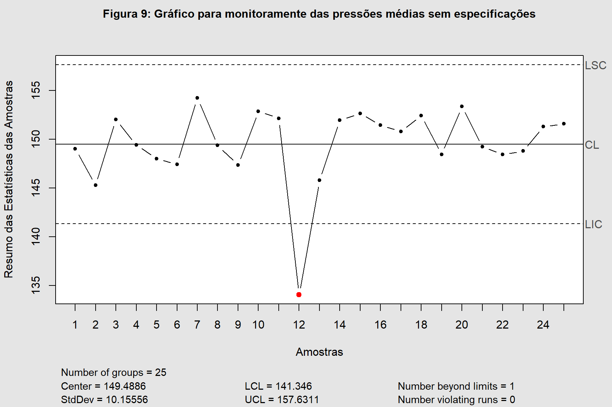
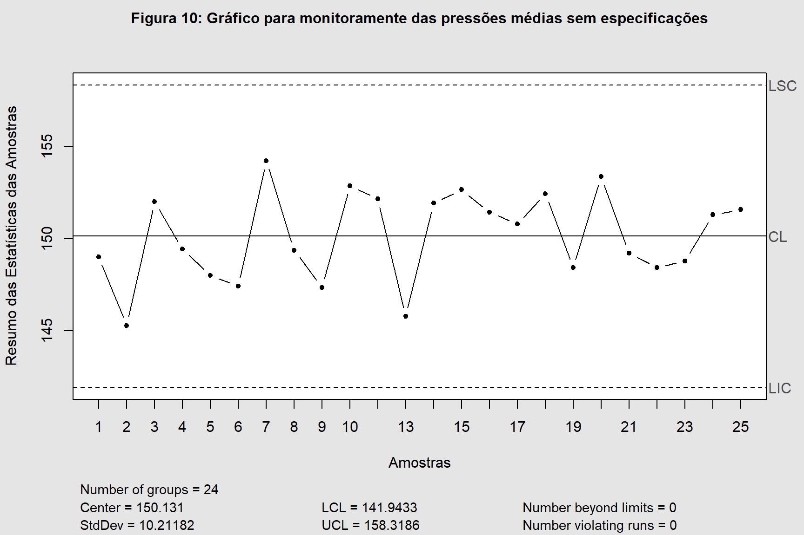

O presente documento visa trazer as resoluções da segunda lista de exercícios da disciplina MATD64 - Controle Estatístico de Processos (CEP), trabalhando com os gráficos de controle de Shewhart a fim de se identificar as condições dos processos baseados nas amostras disponibilizadas nos bancos de dados fornecidos e problemas propostos.
Exercício 1
O diâmetro de um parafuso de aço é um parâmetro importante da qualidade. Dados sobre o diâmetro (em milímetros, mm) são apresentados para 25 amostras de 9 parafusos cada (ver arquivo parafusos.xls).
Construa gráficos de controle apropriados para esse processo.
Examine o processo com relação ao controle estatístico.
Se necessário, revise os limites de controle tentativos, a fim de produzir um conjunto de gráficos de controle para monitorar a produção futura.
Seguem os gráficos de amplitude (R) e da média (\(\bar{X}\)) para os diâmetros dos parafusos.
Mostrar Código
qcc::qcc(parafusos[,-1], type ="R", plot = F)|>plot(label.limits =c("LIC", "LSC"), title ="Figura 1: Gráfico de Amplitudes dos parafusos",xlab ="Amostras", ylab ="Resumo das Estatísticas das Amostras")
Mostrar Código
qcc::qcc(parafusos[,-1], type ="xbar", plot = F)|>plot(label.limits =c("LIC", "LSC"), title ="Figura 2: Gráfico dos diâmetros médios dos parafusos",xlab ="Amostras", ylab ="Resumo das Estatísticas das Amostras")
No gráfico \(\bar{X}\) o teste 1 não é verificado, pois a média das amostras 6, 19 e 20 caem fora dos limites de controle.
Caracteriza que o nível médio dos diâmetros do processo de fabricação dos parafusos está fora de controle.
O teste 3 não foi satisfeito para o gráfico \(\bar{X}\).
6 pontos sucessivos em ordem crescente.
Para a construção do gráfico de controle suficiente para monitorar a produção futura é necessário a remoção das amostras 6, 19 e 20 respectivamente, produzindo assim um gráfico dentro das especificações, conforme a Figura 3.
Mostrar Código
qcc::qcc(parafusos[c(-6, -19, -20), -1], type ="xbar", plot = F)|>plot(label.limits =c("LIC", "LSC"), title ="Figura 3: Gráfico dos diâmetros médios dos parafusos sem pontos discrepantes",xlab ="Amostras", ylab ="Resumo das Estatísticas das Amostras")
Exercício 2
Uma empresa quer monitorar a quantidade (em mililitros, ml) de suco presente nas garrafas que comercializa. Para tanto, selecionou 20 amostras de tamanho 5. Sejam os valores de referência: \(\mu\) = 500 ml e \(\sigma\) = 0,5 ml. Construa gráficos de controle para a média e a variabilidade da quantidade de suco nas garrafas, considerando e também desconsiderando as especificações. Compare os gráficos obtidos segundo estas duas abordagens e, em seguida, conclua.
Solução:
Tendo em vista a pequena quantidade de observações por amostra, o gráfico mais recomendado para avaliação da variabilidade é o Gráfico R para análise solicitada.
qcc::qcc(sucos[,-1], type ="xbar", center =500, std.dev =0.5, plot = F)|>plot(label.limits =c("LIC", "LSC"), xlab ="Amostras",ylab ="Resumo das Estatísticas das Amostras",title ="Figura 5: Gráfico R para medidas com especificações")
Mostrar Código
qcc::qcc(sucos[,-1], type ="R", plot = F)|>plot(label.limits =c("LIC", "LSC"), xlab ="Amostras",ylab ="Resumo das Estatísticas das Amostras",title ="Figura 6: Gráfico R para medidas sem especificações")
Mostrar Código
qcc::qcc(sucos[,-1], type ="xbar", plot = F)|>plot(label.limits =c("LIC", "LSC"), xlab ="Amostras",ylab ="Resumo das Estatísticas das Amostras",title ="Figura 7: Gráfico R para medidas sem especificações")
Com base nas especificações fornecidas, é possível constatar a presença de pontos que ultrapassam tanto o limite inferior - LIC quanto o superior - LSC, fato este que não ocorre nas figuras em que foram estimados os valores de referência, logo, se conclui que há necessidade de se reavaliar os limites de especificação.
Exercício 3
Uma empresa deseja monitorar a pressão tolerada pelas garrafas plásticas que comercializa, visando identificar se dispõe de condições para manter um padrão de qualidade que não se altera ao longo do tempo. Para isso, utiliza 25 amostras de tamanho 14. A empresa deseja saber se todas as garrafas plásticas suportam a mesma pressão média e se a variabilidade da pressão tolerada por tais garrafas é a mesma para todos os lotes comercializados. Além disso, há interesse no monitoramento da produção futura.
Solução:
Tendo em vista que a quantidade de observações por amostra é maior que 10, o gráfico Gráfico S é o mais recomendado para análise solicitada.
Mostrar Código
garrafas <-read.csv2("garrafas.csv")# Gráficos sem especificaçãoqcc::qcc(garrafas[,-1], type ="S", plot = F)|>plot(label.limits =c("LIC", "LSC"), xlab ="Amostras",ylab ="Resumo das Estatísticas das Amostras",title ="Figura 8: Gráfico S para medidas sem especificações")
Mostrar Código
qcc::qcc(garrafas[,-1], type ="xbar", plot = F)|>plot(label.limits =c("LIC", "LSC"), xlab ="Amostras",ylab ="Resumo das Estatísticas das Amostras",title ="Figura 9: Gráfico para monitoramente das pressões médias sem especificações")

Acerca da variabilidade, Figura 8, se constata um processo sobre controle, indicando que a pressão tolerada é a mesma para todos os lotes.
Ao se analisar o gráfico que avalia a média do processo, constata-se que o processo não está sob controle pois a amostra de número 12 está abaixo do valor esperado do processo, caracterizando que esta amostra não suportaria a mesma pressão média.
Para viabilizar o monitoramento de produções futuras, se faz necessário a remoção dos pontos que ferem as regras sensibilizantes, para tanto após a remoção da amostra de número 12 se construiu a Figura 10 que apresenta um processo sob controle.
Mostrar Código
qcc::qcc(garrafas[-12, -1], type ="xbar", plot = F)|>plot(label.limits =c("LIC", "LSC"), xlab ="Amostras",ylab ="Resumo das Estatísticas das Amostras",title ="Figura 10: Gráfico para monitoramente das pressões médias sem especificações")

Exercício 4
Uma empresa de fast-food deseja verificar se o tempo demandado a partir do momento da solicitação até o momento em que o pedido é entregue é uma variável com média sob controle. Em outras palavras, a empresa deseja saber se o tempo médio até que seja feita a entrega é o mesmo para qualquer um de seus clientes ou se, dependendo do momento em que é feito o pedido, esse tempo é maior. São observados os tempos de entrega (em segundos, s) dos pedidos para os últimos 30 clientes atendidos pela empresa.
O tempo de entrega do pedido segue distribuição normal?
Construa gráficos de controle e analise-os. Caso não exibam controle estatístico, revise os limites de controle tentativos.
tempo <-read.csv2("fast-food.csv")test <-shapiro.test(tempo$tempo_entrega)result <-cbind(test$statistic, test$p.value)colnames(result) <-c("Estatística", "p-value")result|> DT::datatable(caption ="Tabela 2: Resultado do teste de normalidade de Shapiro-Wilk.",extensions ='FixedHeader', rownames = F,options =list(dom ='t', fixedHeader = F, autoWidth = F,columnDefs =list(list(className ='dt-center', targets =c(0:1)))) )|> DT::formatRound(columns =c(0:1), digits =4, mark =".", dec.mark =",")
Mostrar Código
par(mfrow=c(1,2))hist(tempo[,-1], ylab ="Frequência", main ="Figura 11: Histograma", xlab ="X")qqnorm(tempo[,-1], xlab ="Quantis normais", ylab ="X", main ="Figura 12: Normal Q-Q Plot")qqline(tempo[,-1], col ="steelblue", lwd =2)
Mostrar Código
par(mfrow=c(1,1))
Com base no teste de normalidade realizado é possível concluir a existência de normalidade, através da não rejeição da hipótese nula (\(H_0\)) que afirma normalidade dos dados. O resultado do teste é confirmado através dos gráficos gerados, sendo possível identificar uma certa simetria entre os dados pelo Histograma bem como a normalidade por meio do QQ Plot.
Tendo em vista que a quantidade de observações por amostra é igual a 1, o gráfico Gráfico R é o mais recomendado para análise solicitada.
Amostras de tamanhos variáveis (n entre 5 e 8) são extraídas de um processo manufatureiro a cada hora. Uma característica de qualidade (normalmente distribuída) é medida para 25 amostras coletadas.
Construa gráficos de controle usando esses dados. O processo está sob controle estatístico?
Supondo que tenha sido identificada uma causa responsável pela falta de controle pontual das amostras identificadas no item anterior, refaça a análise sem tais amostras e descubra se há mais sinais de descontrole do processo.
amostra <-read.csv2("tab5-L2.csv")qcc::qcc(amostra[,-1], type ="S", plot = F)|>plot(label.limits =c("LIC", "LSC"), xlab ="Amostras",ylab ="Resumo das Estatísticas das Amostras",title ="Figura 15: Gráfico S para medidas sem especificações")
Mostrar Código
qcc::qcc(amostra[,-1], type ="xbar", plot = F)|>plot(label.limits =c("LIC", "LSC"), xlab ="Amostras",ylab ="Resumo das Estatísticas das Amostras",title ="Figura 16: Gráfico das médias das medidas sem especificações")
O gráfico \(\bar{X}\) não atende ao requisito do teste 1 das Regras Sensibilizantes, pois existem 2 pontos que ultrapassam o LSC, logo o processo não está sob controle.
Após a identificação das amostras que estão fora de controle, foi feita a remoção das mesmas e refeito o gráfico para as médias, exposto na Figura 17.
Mostrar Código
qcc::qcc(amostra[-c(14, 15),-1], type ="xbar", plot = F)|>plot(label.limits =c("LIC", "LSC"), xlab ="Amostras",ylab ="Resumo das Estatísticas das Amostras",title ="Figura 17: Gráfico das médias das medidas sem especificações")
Conforme ilustrado na Figura 17 é possível constatar que após a remoção das amostras que estão fora de controle, o processo se ajustou, permanecendo assim controlado.
(Cano et al., 2012) In the construction of a building, a critical to quality (CTQ) characteristic might be the fulfillment of a deadline, as unfulfillment can lead to failure. The Six Sigma team identified the following events that can cause a delay in the schedule: weather, errors in planning, delay of suppliers, inadequate operators, customer specifications/delays, defects in materials, and permissions.
(Cano et al., 2012) Na construção de um edifício, uma característica crítica à qualidade (CTQ) pode ser o cumprimento de um prazo, pois o não cumprimento pode levar ao fracasso. A equipe Seis Sigma identificou os seguintes eventos que podem causar atraso no cronograma: clima, erros de planejamento, atraso de fornecedores, operadores inadequados, especificações/atrasos do cliente, defeitos de materiais e permissões.
qcc::cause.and.effect(cause =list("Pessoal"=c("Treinamento", "Inadequado"),"Clima"=c("Chuva", "Temperatura", "Vento"),"Fornecedores"=c("Materiais", "Atrasos", "Retrabalho"),"Planejamento"=c("Cliente", "Permissões", "Erros")),effect ="Atraso", title ="Figura 18: Diagrama de Causa e Efeito")
(Cano et al., 2012) The Black Belt in the construction company of the previous example has investigated why a sampling of deadlines on projects developed in the last 2 years went unfulfilled. He has also estimated the cost of these delays for the company (larger labor force, extra payments, etc.). The number of unfulfilled deadlines and estimated cost are:
Select the causes you must focus on to improve the construction process. Can you select them from only one of the charts?
(Cano et al., 2012) O Black Belt na construtora do exemplo anterior investigou porque uma amostragem de prazos de projetos desenvolvidos nos últimos 2 anos não foi cumprida. Ele também estimou o custo desses atrasos para a empresa (maior força de trabalho, pagamentos extras, etc.). O número de prazos não cumpridos e o custo estimado são:
Faça um gráfico de Pareto por número de defeitos.
Faça um gráfico do custo do erro.
Selecione as causas nas quais você deve focar para melhorar o processo de construção. Você pode selecioná-los de apenas um dos gráficos?
names(Contagem) =c("Treinamento", "Chuva", "Temperatura", "Vento", "Materiais", "Atrasos", "Retrabalho", "Planejamento", "Cliente", "Permissões", "Erros")qcc::pareto.chart(Contagem, plot = F)|>plot(title ="Figura 19: Gráfico de Pareto para a contagem dos erros",ylab ="Frequência do Erro", ylab2 ="Percentual Acumulado")
Mostrar Código
names(Custo) =c("Treinamento", "Chuva", "Temperatura", "Vento", "Materiais", "Atrasos", "Retrabalho", "Planejamento", "Cliente", "Permissões", "Erros")qcc::pareto.chart(Custo, plot = F, main ="Figura 17: Gráfico de Pareto para os custos dos erros")|>plot(main ="Figura 20: Gráfico de Pareto para os custos dos erros",ylab ="Frequência do Erro", ylab2 ="Percentual Acumulado")
Baseado nos gráficos desenvolvidos, o retrabalho evidencia ser a causa mais importante a ser investigada e sanada para o bom andamento do serviço.